長期トレンド
JKMとJEPXシステムプライスの推移グラフ
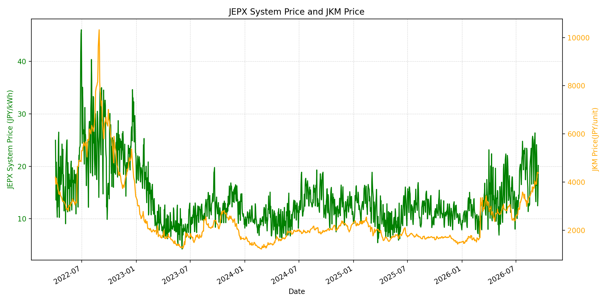
WTIの推移グラフ
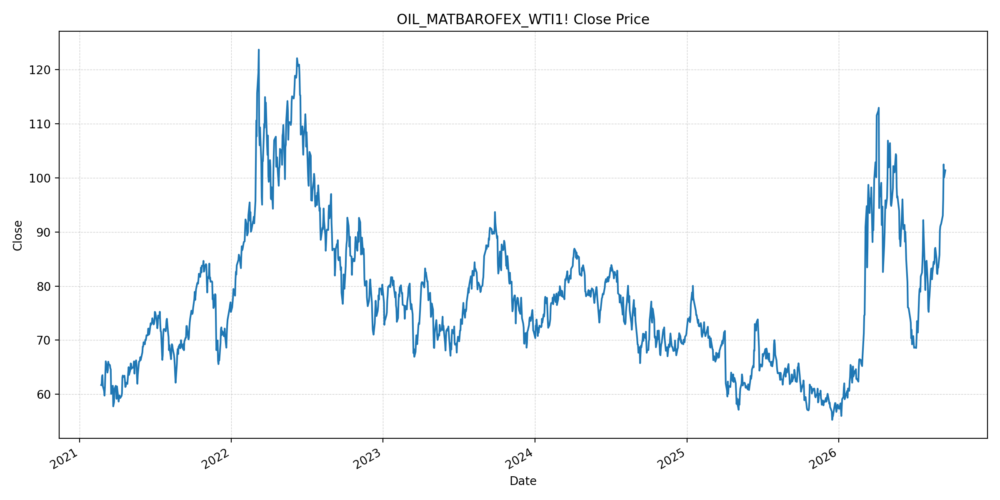
JEPXエリアプライスグラフ（直近一年分）
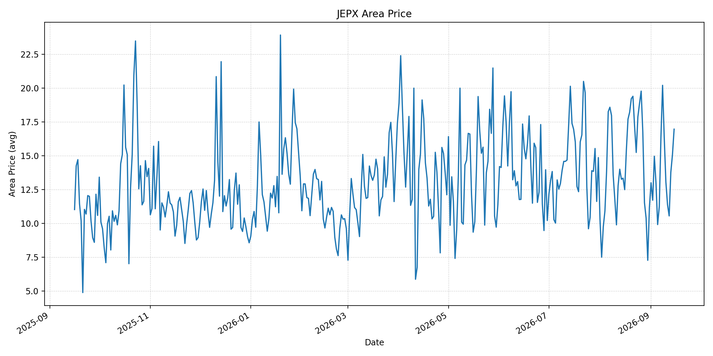
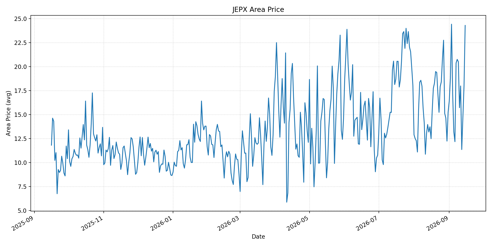
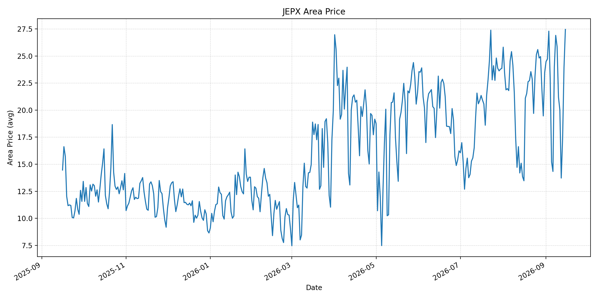
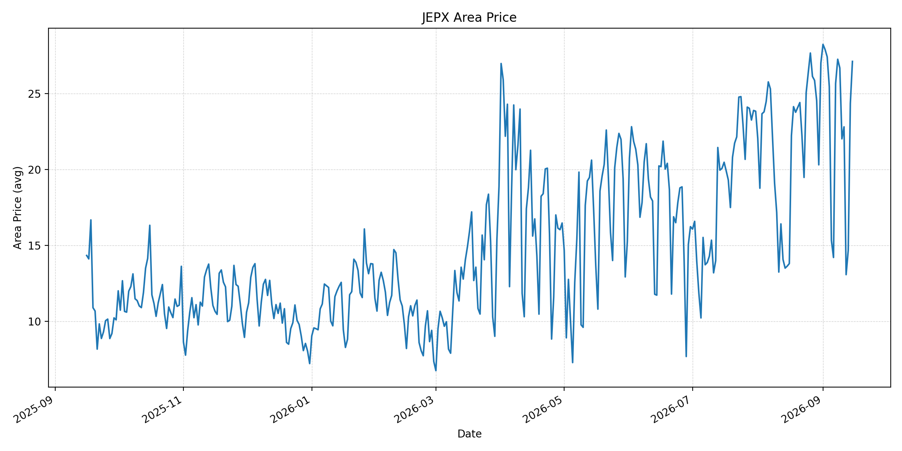
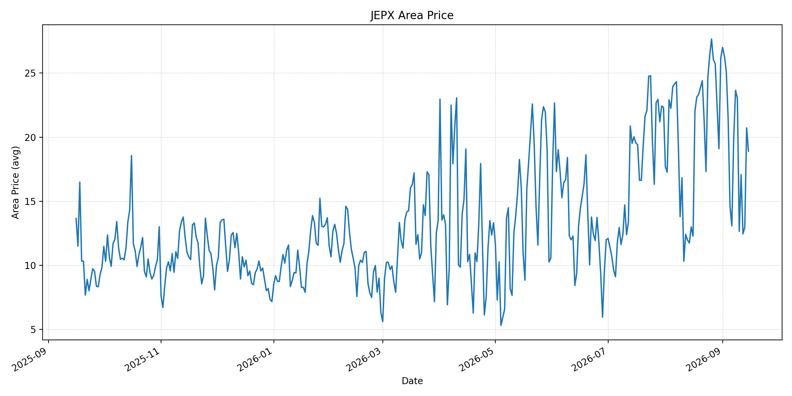
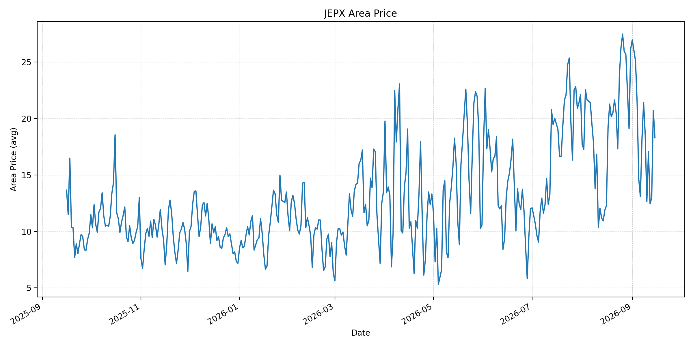
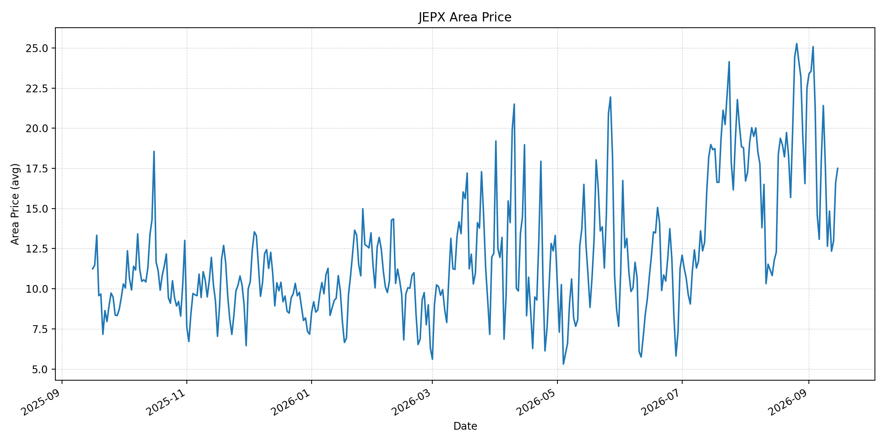
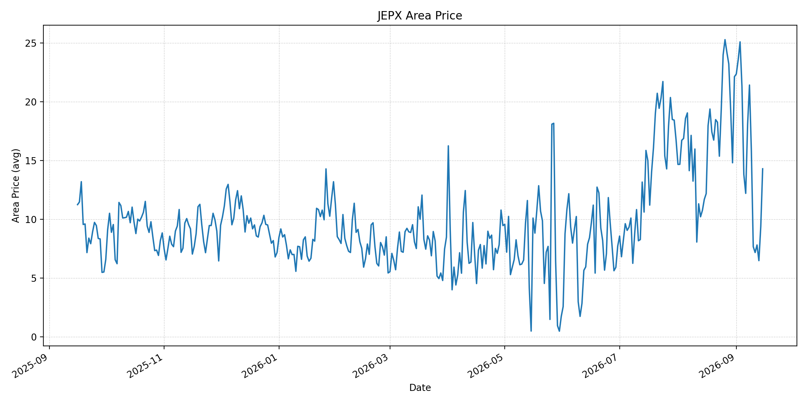
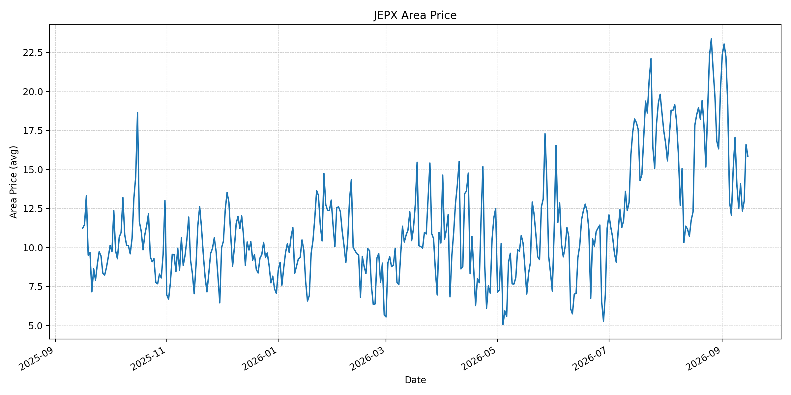
短期トレンド
JKMとJEPXシステムプライスの推移グラフ
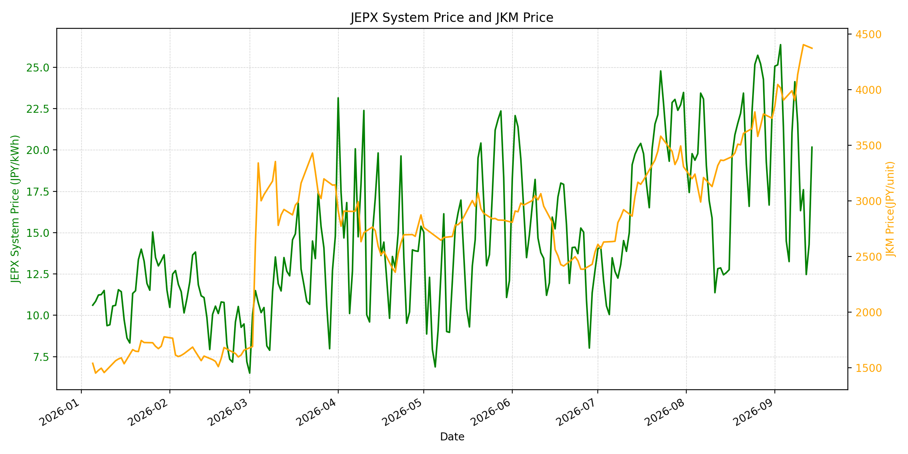
WTIの推移グラフ
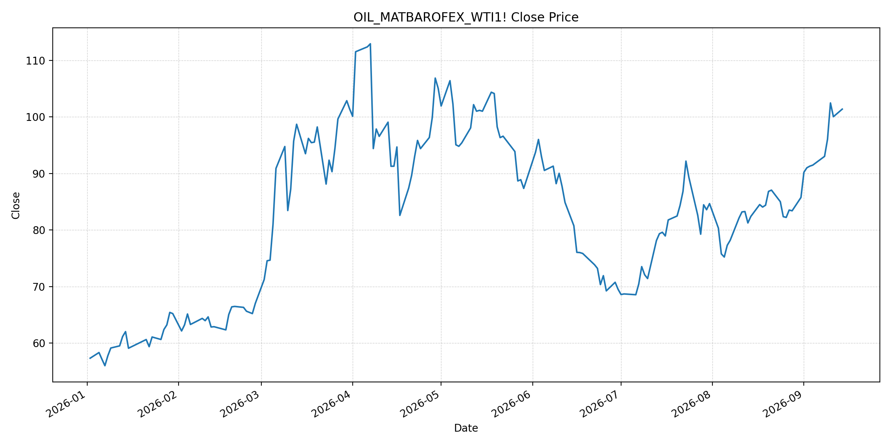
JEPXシステムプライス
最新値は 2026-09-15 分、先週終値は 2026-09-08、先月終値は 2026-08-31 時点の直近値です。
| エリア | 当日価格 | 前日価格 | 前日比（％） | 先週終値 | 先週比（％） | 先月終値 | 先月比（％） | 過去最高値 | 最高値比（％） |
|---|---|---|---|---|---|---|---|---|---|
| システム | 22.51 | 20.17 | 11.60 | 24.13 | -6.71 | 22.10 | 1.86 | 64.06 | -64.86 |
| 北海道 | 16.96 | 15.08 | 12.47 | 20.20 | -16.04 | 11.18 | 51.70 | 73.92 | -77.06 |
| 東北 | 24.30 | 18.01 | 34.93 | 20.76 | 17.05 | 15.25 | 59.34 | 84.92 | -71.38 |
| 東京 | 27.45 | 23.93 | 14.71 | 26.90 | 2.04 | 23.47 | 16.96 | 86.13 | -68.13 |
| 中部 | 27.11 | 24.34 | 11.38 | 27.25 | -0.51 | 27.01 | 0.37 | 52.06 | -47.93 |
| 北陸 | 18.90 | 20.72 | -8.78 | 23.65 | -20.08 | 26.18 | -27.81 | 46.48 | -59.34 |
| 関西 | 18.30 | 20.71 | -11.64 | 21.42 | -14.57 | 26.17 | -30.07 | 46.48 | -60.63 |
| 中国 | 17.50 | 16.60 | 5.42 | 21.41 | -18.26 | 22.51 | -22.26 | 46.48 | -62.35 |
| 四国 | 14.29 | 9.39 | 52.18 | 21.41 | -33.26 | 22.12 | -35.40 | 46.48 | -69.26 |
| 九州 | 15.84 | 16.60 | -4.58 | 17.06 | -7.15 | 20.06 | -21.04 | 40.54 | -60.93 |
LNG先物価格
最新値は 2026-09-14 の LNG(close) です。先週終値は 2026-09-07、先月終値は 2026-08-31 時点の直近値です。
| 当日価格 | 前日価格 | 前日比（％） | 先週終値 | 先週比（％） | 先月終値 | 先月比（％） | 過去最高値 | 最高値比（％） |
|---|---|---|---|---|---|---|---|---|
| 4373.00 | 4405.00 | -0.73 | 3991.00 | 9.57 | 3744.00 | 16.80 | 10319.00 | -57.62 |
石油先物価格
最新値は 2026-09-14 の OIL(close) です。先週終値は 2026-09-04、先月終値は 2026-08-31 時点の直近値です。
| 当日価格 | 前日価格 | 前日比（％） | 先週終値 | 先週比（％） | 先月終値 | 先月比（％） | 過去最高値 | 最高値比（％） |
|---|---|---|---|---|---|---|---|---|
| 101.39 | 100.05 | 1.34 | 91.48 | 10.83 | 85.76 | 18.23 | 123.70 | -18.04 |
ニュース
イラン情勢に関するニュース
- 9月14日、湾岸アラブ諸国はイランとの協議を延期し、フーシ派はサウジアラビアへの新たな攻撃を実施しました。緊張緩和の外交日程が後退しています。参照: Reuters, 2026-09-14
- 同日の報道では、イラン関連船舶に対する封鎖の再実施以降、イラン産原油の輸出が停止しているとされます。参照: Reuters, 2026-09-14
ホルムズ海峡経由の石油・LNGに関するニュース
- 船舶追跡データでは、ホルムズ海峡のコモディティ船通航が週末に一桁へ低下し、10日平均を大きく下回りました。参照: Reuters, 2026-09-14
- タンカー攻撃後、海峡の通航はほぼ停止状態に近づき、米・イラン協議も停滞しています。参照: Reuters, 2026-09-14
ホルムズ海峡経由でない石油・LNGに関するニュース
- サウジ東西パイプラインは攻撃被害の修復のため、主要部分が数週間にわたり停止する見通しです。紅海経由の代替輸送能力にも制約が生じます。参照: AP, 2026-09-14
- フーシ派はバブ・エル・マンデブ海峡付近の戦略的な紅海の島2島を掌握したと発表しました。海峡回避の補完経路である紅海側の安全性も低下しています。参照: AP, 2026-09-14
日本国内のイラン戦争に関係するニュース
- 過去24時間で、イラン戦争を理由にJEPXの制度または国内の電力需給運用を直接変更する主要な新規公表は確認できませんでした。
- 日本の電力市場では燃料輸入の不確実性が上昇している一方、当日スポット価格は気象・再エネ出力・需給にも左右されます。燃料相場だけによる機械的な価格転嫁は前提としません。
インサイト
ニュース事項による日本の電力市場への影響（短期：数日〜1週間）
- JEPXシステムは 22.51 円/kWhで前日比 11.60% 上昇しました。東京は 27.45 円/kWh、東北は 24.30 円/kWhで、週初の卸電力価格は上向いています。
- LNGは 4373.00 で前回比 -0.73% と小幅低下しましたが、先週比は 9.57%、WTIは 101.39 ドルで先週比 10.83% です。海峡通航の減速とパイプライン停止見通しは、次回調達分の価格・到着リスクを高めます。
- 短期では、ホルムズ海峡の実通航数、サウジ東西パイプラインの復旧予定、紅海の船舶安全、スポットLNGの船腹状況を日次で確認します。
ニュース事項による日本の電力市場への影響（長期：1ヶ月〜半年）
- システム価格は先月比 1.86%、LNGは 16.80%、WTIは 18.23% 上昇しています。海峡と代替パイプラインの制約が継続すれば、火力の限界費用と小売調達コストに上振れ圧力が残る可能性があります。
- 東北は先月比 59.34%、北海道は 51.70% 上昇した一方、四国は -35.40% です。燃料相場とエリア別の需給・連系線制約を分けて監視する必要があります。
- ホルムズ海峡、サウジ西向け搬出、バブ・エル・マンデブ海峡の複数経路が同時に制約される場合、調達先の分散、LNG在庫、長期契約の柔軟性、代替輸送の実効性が中長期の重要変数になります。